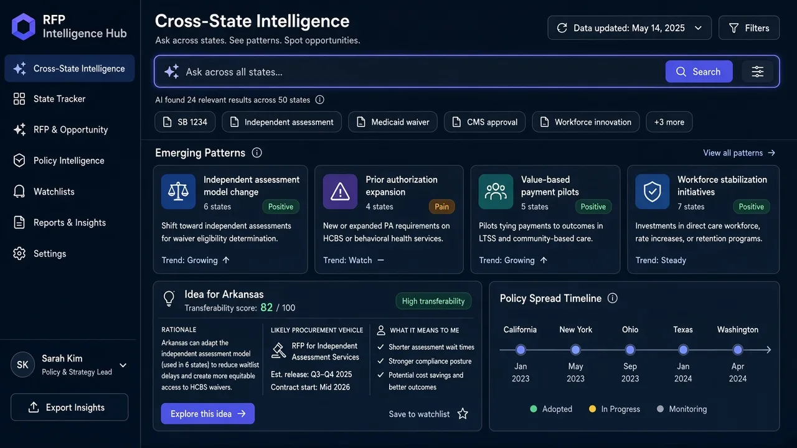
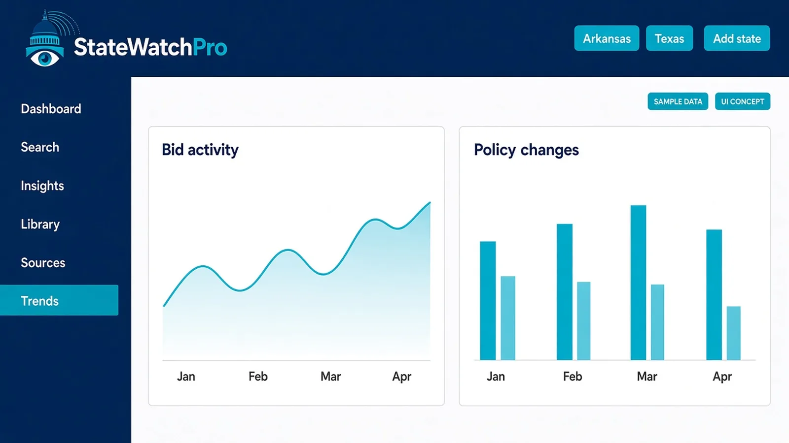
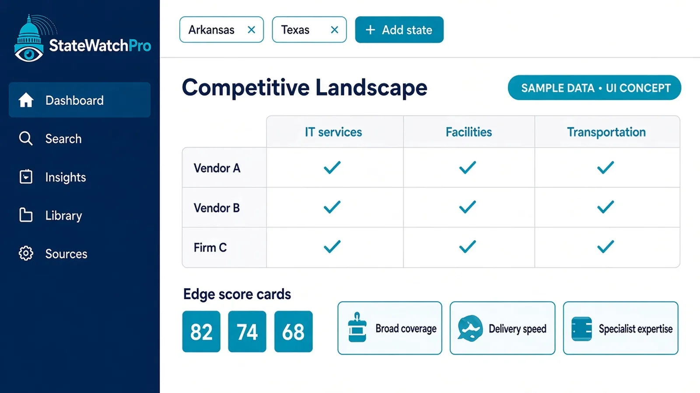
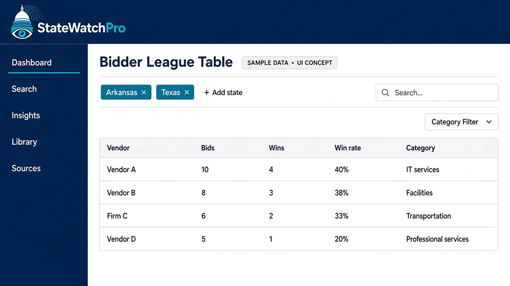
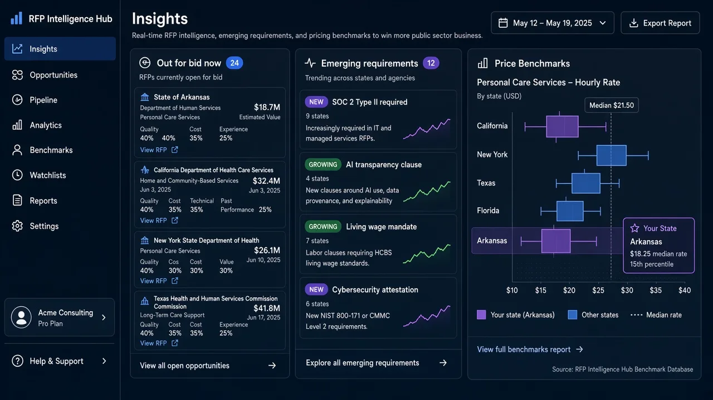
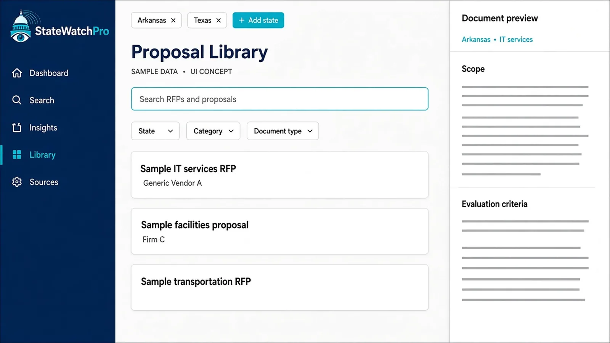
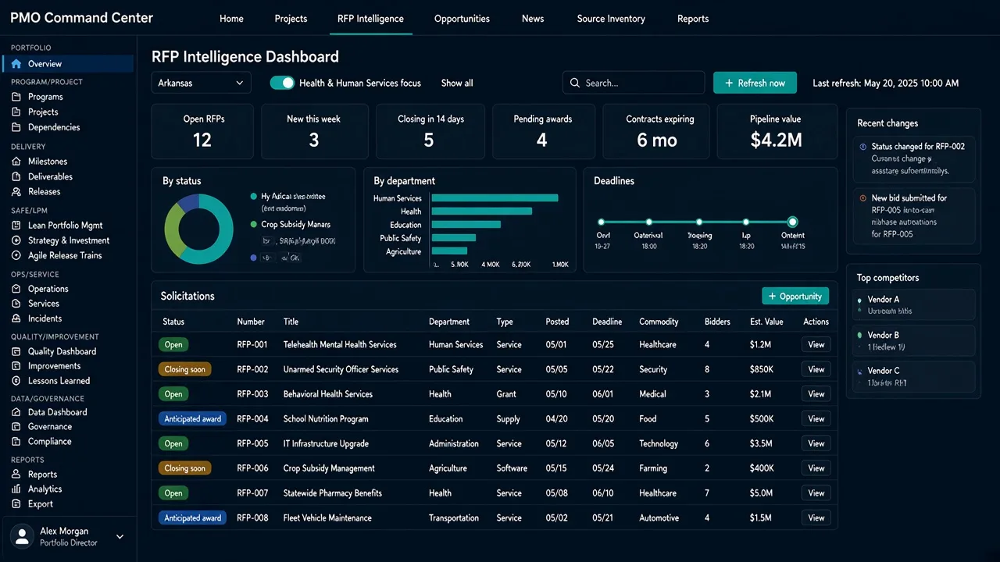
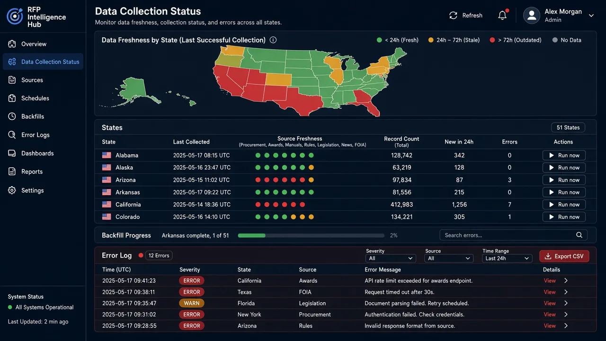
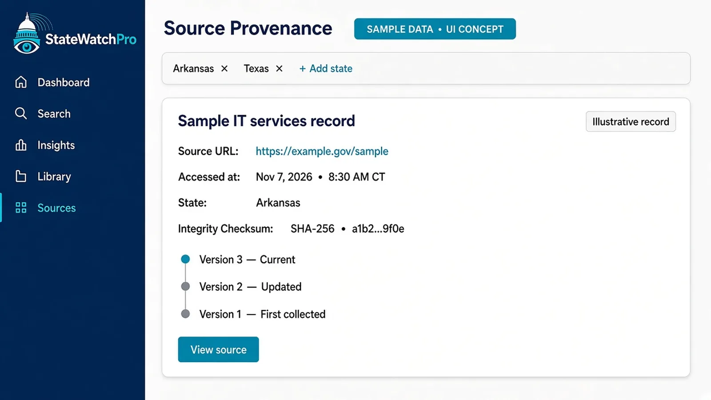

What each feature does, and why it matters
StateWatchPro brings procurement (bids, awards, bidders, pricing) and policy (legislation, rules, manuals, news) into one place, for teams pursuing new state bids, for those protecting contracts they already hold, and for state staff comparing other states.
AI cross-state search
What it does
Search every state you follow in plain language. The AI groups results into patterns, flags recurring pain points, and highlights good ideas from one state that could carry over to another, each linked to its source. For state staff, it is a way to compare what other states are doing, with each finding linked to the source.
Why it matters
Pain points and good ideas in one state often show up later in others, but nobody connects them. Reading 50 portals by hand doesn't scale. State staff run into the same problem when they need a peer comparison.
Outcome
Earlier insight into where a state is heading, and proposal themes grounded in what has already worked elsewhere, plus expansion ideas for the contracts you hold. State staff leave with comparisons they can adapt.

Executive dashboards & trends
What it does
A single view of your pipeline: what's out for bid, upcoming deadlines, recent awards, and how solicitation activity and policy changes are trending over time. For state staff, the same view is how you follow trends across states.
Why it matters
Leaders deciding which bids to pursue, and which contracts need attention, need the picture quickly, without waiting for someone to assemble it from many sources. State staff need that same picture when they are watching peer states.
Outcome
Faster, better-informed bid/no-bid decisions, and early warning on contracts you hold. State staff can see which way activity is moving before they rewrite a solicitation.


Competitive landscape
What it does
Compare vendor capabilities side by side, see who appears to have the edge in a service area, and review the differentiators that show up in bids and evaluations. For state staff, the comparison shows how similar work is scoped and which approaches show up in other states.
Why it matters
Knowing who you're up against, and why they win, is central to new pursuits and to defending incumbent contracts at rebid. For state staff, the same comparison is a way to see how other states have structured the work.
Outcome
A sharper win strategy, and stronger positioning when your own contracts come up for rebid. State staff can borrow scope and evaluation patterns that already appear elsewhere.

Bidder league table
What it does
Bidder and winner reports by service category and state: who bid, who won, and how outcomes compare across states, including where competitors are moving. For state staff, it shows who has taken on similar work in other states and how those awards compare.
Why it matters
There's no single view of who bids and who wins across state markets. State staff can use that same view to see how often comparable work is awarded elsewhere.
Outcome
Better pursuit selection and earlier identification of competitors and teaming partners. State staff get a cross-state comparison of awards without assembling it by hand.

Insights
What it does
What's out for bid, contract details, emerging requirements, and price benchmarks for what states pay, in one running page. For state staff, the price benchmarks are cost reporting: what other states pay and how the contracts are scoped.
Why it matters
New requirements and pricing expectations show up in solicitations before they become common knowledge. State staff can read those same figures when they scope their own work.
Outcome
Pricing confidence and responses that address requirements before competitors notice them. State staff can reuse the cost and scope detail when they adapt an approach from another state.

Proposal reference library
What it does
A library of RFPs, amendments, Q&A, and proposals from other states that your team can reference.
Why it matters
Proposal writers need to see how other states framed similar work and how vendors responded.
Outcome
Time saved on research and stronger, better-informed proposal drafts.

Standard executive reports
What it does
Repeatable reports, including standard competitive-landscape reports, ready for leadership briefings and pipeline reviews. Reporting features are annual members only. The one-week (7-day) trial does not include them.
Why it matters
Rebuilding the same briefing every week takes time away from capture work.
Outcome
Consistent leadership briefings with less manual assembly.

Collection status & error logs
What it does
A per-state collection status page plus activity and error logs show when each source was last collected, what changed, and what failed. Collection follows each site's robots.txt rules, spaces out requests, and backs off when asked.
Why it matters
You can only trust intelligence if you know how fresh it is and where gaps exist.
Outcome
Confidence in what you're reading, and clear visibility into any gaps.

Saved views and filters New
What it does
The state filter is a control in the header of every page. Choose one state or any combination, and the whole site follows it. Save that filter, or a dashboard view, and reopen it for yourself or your team.
Why it matters
Most teams focus on a territory, a pursuit list, or a peer set of states, not all 50 states at once.
Outcome
Less noise, and a saved starting point for the states and categories you follow.
Pick Arkansas, Texas, or any set of states once, and every dashboard, table, and search follows that selection.
Source provenance on everything
What it does
Every item shows its source and when it was collected, so findings can be checked against the original document.
Why it matters
Bid decisions, proposal claims, and contract decisions need evidence that holds up.
Outcome
Decisions you can defend, backed by traceable public sources.

Alerts and email digests New
What it does
Set alerts for new RFPs, amendments, deadlines, awards, renewals, and price or cost changes. Email digests and notifications cover saved searches and new opportunities. Alerts and digests are delivered in-app and by email.
Why it matters
A deadline, an amendment, or a change in what states pay can alter a bid, a contract, or a program plan. A digest carries the matches from a saved search when the work spans many states.
Outcome
The people watching a state or a contract hear about the change in the product and by email.
- New RFPs
- Amendments
- Deadlines
- Awards
- Renewals
- Price or cost changes
- Email digests and notifications
- Delivered in-app and by email
Customizable dashboards New
What it does
Arrange widgets for the states, categories, pipeline, deadlines, trends, and cost comparisons you care about. Save the layout for yourself or for your team.
Why it matters
A capture lead, a pricing analyst, and a state program manager each open StateWatchPro with a different question.
Outcome
Each person gets a view built for their work, and a team can share one saved view.
- States and categories
- Pipeline and deadlines
- Trends
- Cost comparisons
- Saved per user or per team
Peer States New
What it does
State government employees compare spend, prices, vendors, contract terms, and model bills, and benchmark their state against others. Each comparison links back to the public source.
Why it matters
A state team deciding how to scope work, what to pay, or which contract terms to use needs a peer set, not a stack of unrelated portals.
Outcome
A benchmark a state team can check, then adapt.
- Spend
- Prices
- Vendors
- Contract terms
- Model bills
- Benchmark against other states
Quarterly State Government Trends Reports New
What it does
Every quarter, a report covers the states in StateWatchPro: spend and award volume by category, agency type, and state, quarter over quarter and year over year; growing and declining categories; emerging initiatives such as AI, cybersecurity, broadband, and modernization of large program systems; shifts in vendor market share; price and unit-cost benchmarks; legislation trends and model bills; and a short insights summary. Every figure links to its source. Issues are kept in an archive, with PDF and CSV downloads and optional email delivery, for vendors and for government teams. A quarterly webinar on trends and insights across state governments is offered along with the report.
Why it matters
The quarter is when patterns in spend, awards, prices, and bills are easier to see than in a single solicitation.
Outcome
One reading of the quarter, with the source behind each figure, for the people who sell to states and the people who work in them. The report, other reporting features, and the webinar are annual members only. The one-week (7-day) trial does not include them.
- Spend and award volume
- Growing and declining categories
- Emerging initiatives
- Vendor market share
- Price and unit-cost benchmarks
- Legislation and model bills
- Insights summary
- Archive, PDF, CSV, optional email
- Quarterly webinar
Quarterly webinar
Offered along with the quarterly State Government Trends Report. Annual members only.
A quarterly webinar on trends and insights across state governments, offered along with the quarterly State Government Trends Report. Annual members only. The one-week (7-day) trial does not include the webinar, the quarterly report, or other reporting features.
FOIA filing service
Have a FOIA request officially submitted on your behalf for $199 per request. Legal staff draft, submit, confirm receipt, and track results. The request is sent from our parent company, so your company information is not disclosed. Annual members get 1 free FOIA request per year. That free request is for annual members only, not monthly members.
You submit the basic request. StateWatchPro staff review it and draft the formal FOIA request. Within 48 hours you can approve the draft or request changes. If you do not approve it within 48 hours, the request is finalized and sent to the state agency. After it is sent, tracking and status updates are provided to you on each FOIA request.
See StateWatchPro on your states
Arkansas comes first, with all 50 states on the rollout plan. Ask for a walkthrough or get on the early-access list.